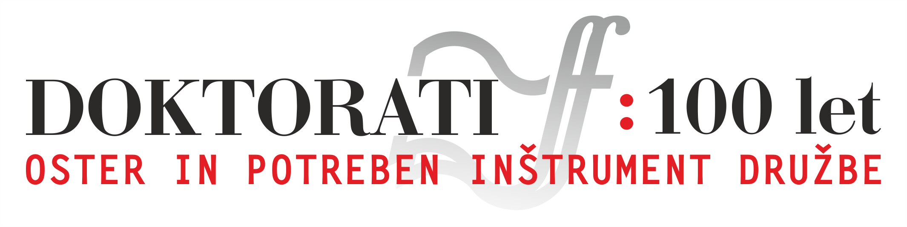

Z delom predavatelja na fakulteti je začel leta 1941 in ga za nekaj časa zaradi odhoda v partizane prekinil. Leta 1949 je bil zaradi opredelitve za informbiro skoraj 8 let zaprt na Golem otoku. Po vrnitvi se iz zdravstvenih razlogov ni več vrnil na fakulteto. Tudi v svojem raziskovalnem delu se je odmaknil od Vebrove predmetne teorije in zagovarjal doktrino dialektičnega materializma, kar se jasno kaže v njegovih objavljenih delih.
Moj stric, dr. Cene Logar, je bil eden najpomembnejših filozofov, ki jih imamo Slovenci. Študiral je pri znamenitih profesorjih na Sorboni, na Dunaju in tudi pri prof. Vebru. Zaradi svojih stališč, ki so bila v nasprotju z uradnimi stališči partije, je bil obsojen in je kazen prestajal na Golem otoku. Obsojeni so bili tudi štirje njegovi bratje, skupaj od desetih otrok, kolikor jih je bilo v družini (devet bratov in ena sestra, cela družina je bila partizanska). Zaradi svoje neizmerne pokončnosti in trmoglavosti ter brezkompromisnega sledenja svojim načelom je bil na Golem otoku kar sedem let, kar je ena najdaljših dob med obsojenci. Njegovo delovanje je bilo že od partizanskih časov do konca dosledno. Sledil je nekim svojim ciljem, od katerih ni odstopal do konca. Tudi potem, ko je bil popolnoma osamljen v Ljubljani, ko je izgubil vse prijatelje in celo stike z družinskimi člani in ko je bil pod nenehnim nadzorom Službe državne varnosti. Zato je plačal z zdravjem, izjemno visok davek pa je plačala tudi vsa njegova družina.Božidar Debenjak, filozof :
Cene Logar se je poskušal habilitirati kot privatni docent okoli leta 1940. Takrat to ni bilo sprejeto. Zato je študiral v Pragi in Franciji. Takrat se je ukvarjal s femenologijo na način, ki je bil takrat moderen, danes pa je seveda »passé«. Njegov habilitacijski postopek se je končal že po italijanski okupaciji, ko je začuda uspel. Nato pa je šel v partizane, po vojni je bil na politični funkciji, vendar je bil razrešen. Leta 1947 je prišel v stroko, ki jo je študiral. Naslov predavanj je bil dialektični materializem. Potem pa se je zgodil informbiro, katerega rezultat je bil Goli otok. Ko je bil izpuščen, ga je vzel pod svojo streho republiški arhiv, kjer je bil v službi, dokler se ni politika spomnila, da bi ga lahko rehabilitirali v sklopu Filozofske fakultete. In to je fakulteta, seveda, tako tudi naredila. Iz habilitacije znanstvenega svetnika je dobil habilitacijo rednega profesorja. Vendar pa je tedaj poslal kratko pisemce, v katerem je izjavil, da mu zdravnik ne dovoli predavati in zato ni nikoli predaval.